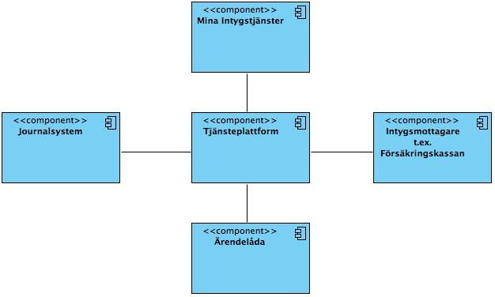
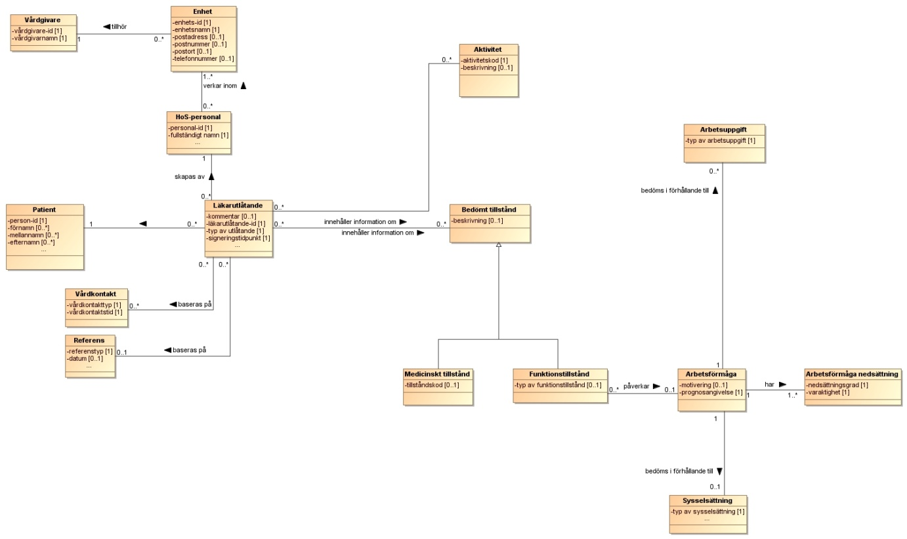
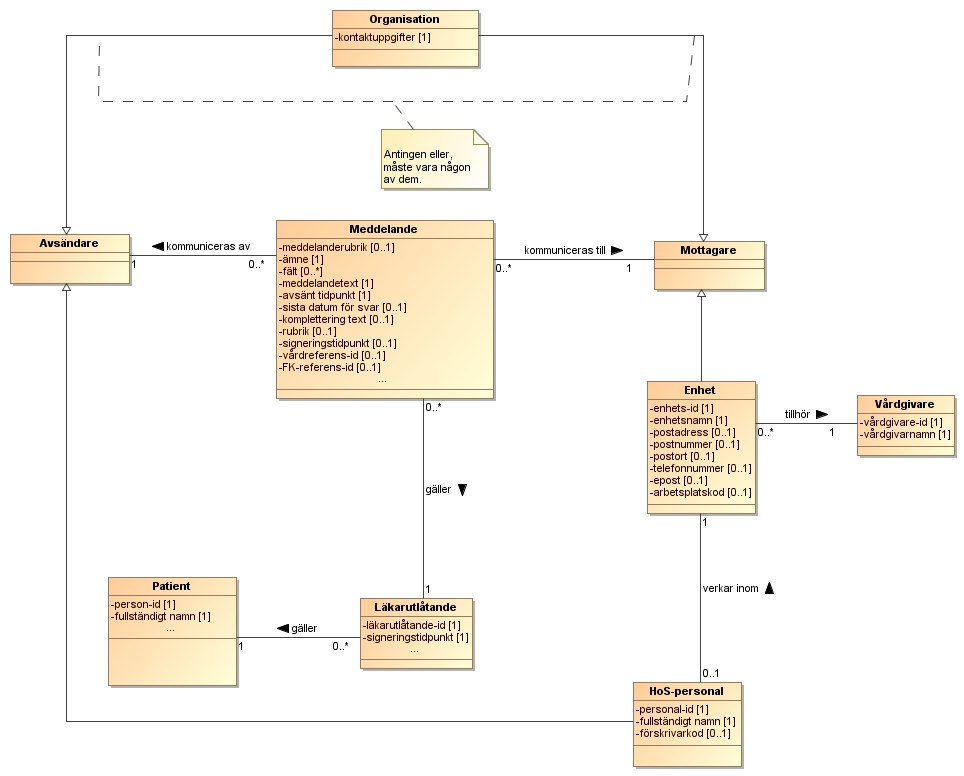

This fragment is not visible to the reader
This publication includes IP covered under the following statements.
| Type | Reference | Content |
|---|---|---|
| web | www.inera.se |
IG © 2024+
. Package inera.insuranceprocess-healthreporting#3.1.1 based on FHIR 4.0.1
. Generated 2026-10-12
Links: Table of Contents | QA Report |
| web | bitbucket.org | Bitbucket |
| web | bitbucket.org | Bitbucket issues |
| web | bitbucket.org | Version 3.1.1 · tagg insuranceprocess_healthreporting_3.1.1 |
| web | oskthu2.github.io | Alla tjänstedomäner · Alla tjänstekontrakt |
| web | oskthu2.github.io | Alla tjänstedomäner · Alla tjänstekontrakt |
| web | rivta.se | Arkitektur & Regelverk: Teknik: Godkänd |
| web | rivta.se | zip · källkod |
| web | bitbucket.org | zip · källkod |
| web | rivta.se | zip · källkod |
| web | bitbucket.org | zip · källkod |
| web | bitbucket.org | källkod |
|
img_001.jpeg  |
|
img_002.jpeg  |
|
img_003.png  |
|
tree-filter.png
|